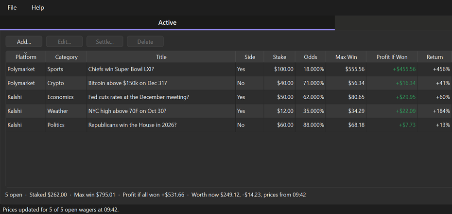

Every wager you place on Kalshi and Polymarket, kept in one book — open, closed, and what each one actually paid.
Each prediction market site shows you its own positions, in its own words, on its own page. A wager that closes slips off into a history list you have to go looking for, and neither site can tell you the one thing you actually want to know: how you are doing across both of them.
Wager Book is the record the sites do not keep for you. One table holds every wager from both platforms side by side — what you staked, the odds you got, the most it can pay, what it is worth today, and, once it is over, what it really paid. It is a book you keep, not an account you log into.
Everything lives in a single readable JSON file in your own application data folder — not in the install folder — so upgrading or uninstalling never touches your wagers. It is rewritten whole through a temporary file on every change, so a crash mid-write leaves the previous book intact rather than a half-written one.
There is no account and no sign-in, nothing about you is collected, and the only thing that ever leaves your machine is a request for public market prices when you press Update Prices. The app never sees your platform logins, because it never asks for them.
Wager Book does not place wagers, connect to your accounts, or tell you what to bet on. It records what you have already done and does the arithmetic on it. Nothing here is betting advice, and a running total of past results is a record of the past, not a prediction.
Free, and you do not need Python or anything else installed. Version 0.8.2.
Download for Windows Download for macOS Source on GitHubBoth buttons bring you to the GitHub release page: scroll down to the Assets section. On Windows take wagerBookSetup-0.8.2.exe to install it, or WagerBook-0.8.2-portable.zip if you would rather unzip a folder and run WagerBook.exe from anywhere. On macOS take WagerBook-0.8.2-macos.zip, unzip it and drag WagerBook.app to Applications.
The Windows installer is per-user, so it asks for no administrator rights and installs nothing machine-wide. On macOS the bundle is not notarised, so right-click the app and choose “Open” the first time rather than double-clicking. Every build is produced by a public workflow straight from the source, and is asked whether it kept its icon, its manual and its certificate list, and whether it can still open its own window, before it is published — the certificate list because a bundle that lost it would look fine until Update Prices failed as though both sites were down.

Visit the Wager Book SiteScreenshots, the manual and the downloads.
All DownloadsInstaller, portable zip and the macOS app.
Read the ManualIncluding the arithmetic. Also on F1 inside the application.
Wager Book is free and open source. There is no licence to buy, no account to make, no ads, and nothing about you is collected or sent anywhere. That is also why software like this is hard to sustain: there is no subscription to bill and no data to sell, so nothing pays for the work behind it.
A book of money owed and money won has to be right, and it has to keep being right. Two sites change their market data without warning, a payout rule turns out to have an exception, a CSV export gains a column, and an app that quietly got the arithmetic wrong would be worse than no app at all. That is why the import shows you every row before it adds it, why settling proposes the usual payout but still lets you correct it, and why the book is written in a way that survives a crash halfway through. A donation is what pays for that kind of care, and it funds the next free tool as well as the upkeep of this one.
If this gave you a straight answer about how you are actually doing, please consider chipping in.
DonateSecure payment through PayPal — no account required, and any amount is appreciated. Thank you for supporting independent, open source software.